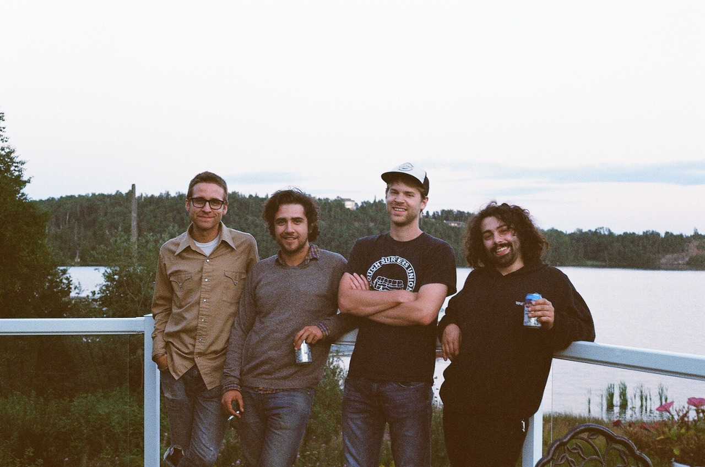

About

“The landscape of Northwestern Ontario has a weight to it; from the ancient mass of the Canadian
Shield
underfoot to the ponderous silence of the boreal forest, there’s something about this region that naturally
conveys a sense of heaviness.” – Kate Erickson
Emerging in the punk scenes of dirty basements and sleazy bars pockmarked along the great Canadian rock, 1971
has
steadily grown into a mature sound that is uniquely their own. Over the years, they slowly departed from
their
roots into a something that is strange but familiar; channelling lightness from indie rock, song structures
and
writing styles of American folk and country music while maintaining the energy and passion from their youths
as
misguided punks. The weight they carry comes from a very real place somewhere between the tranquil woods and
the
riotous city streets.
The three founding members, Cameron Cranston (bass guitar/vocals), Garrett Iverson (guitar/vocals) and Jory
Strachan (drums/vocals) formed in 2011 and have, in a way, been helplessly bound to each other as if by
blood
since. Diving into the unknown in a dilapidated van as teenagers, through tumultuous troubles, heartbreak,
and
the road’s wonders and trials, the three have continued to make music and art together, enlisting friends to
collaborate on the project along the way.
Early on the three left the town of Kenora and found a place for themselves in Winnipeg, Manitoba. Close
friend
Tanner Neil joined the band spring of 2016 and toured with that following summer.
On February 13th, 2017 bassist, founding member and best friend Cameron Glen Cranston suddenly passed away in
the
Thunder Bay Regional Health Sciences Center. He was 25 years old.
The band decided not to continue without their brother.
After his passing the remaining members, Garrett Iverson, Jory Strachan and Tanner Neil decided to release
the
last existing recordings of the band with Cameron; two demos they recorded for a recording fund grant
application they received with the songs ‘The Manipulator’ and ‘Anxiety’.
The songs, accompanied by a third ‘Etinohah’, written and recorded by Cameron Glen Cranston, will be released
on
cassette with Art of the Uncarved Block and on 7” vinyl on December 1st, 2017 in honor of Cam and as a final
memento for the band.
A compilation album of the band’s career will also be accompanying the release, featuring previously
unreleased
live version of their first song “TIME”, on double cassette with Art of the Uncarved Block and on compact
disc.
“A noisy domineering soundscape that is lush and verdant like a well-kept garden” – Diamond
Deposits,
2016
“Whether the four-piece are incorporating slow and sludgy beats, or showing off their more melodic
side
with fast-paced rock'n'roll, 1971 remain dedicated to honouring the punk ethos they've grown up with:
committing
to "absolute freedom of expression."” – Exclaim!
“Huge noise, beautiful crescendos, and incredible sound keeps me coming back to them on a
close-to-daily
basis.”– Mind The Music T.O.